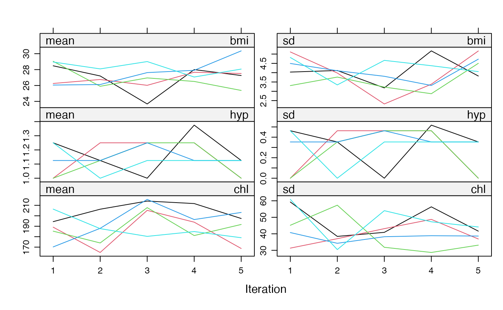

Imputes univariate missing data using random forests.
mice.impute.rf(
y,
ry,
x,
wy = NULL,
ntree = 10,
rfPackage = c("ranger", "randomForest"),
...
)Vector to be imputed
Logical vector of length length(y) indicating the
the subset y[ry] of elements in y to which the imputation
model is fitted. The ry generally distinguishes the observed
(TRUE) and missing values (FALSE) in y.
Numeric design matrix with length(y) rows with predictors for
y. Matrix x may have no missing values.
Logical vector of length length(y). A TRUE value
indicates locations in y for which imputations are created.
The number of trees to grow. The default is 10.
A single string specifying the backend for estimating the
random forest. The default backend is the ranger package. The only
alternative currently implemented is the randomForest package, which
used to be the default in mice 3.13.10 and earlier.
Other named arguments passed down to
mice:::install.on.demand(), randomForest::randomForest() and
randomForest:::randomForest.default().
Vector with imputed data, same type as y, and of length
sum(wy)
Imputation of y by random forests. The method
calls randomForrest() which implements Breiman's random forest
algorithm (based on Breiman and Cutler's original Fortran code)
for classification and regression. See Appendix A.1 of Doove et al.
(2014) for the definition of the algorithm used.
An alternative implementation was independently
developed by Shah et al (2014). This were available as
functions CALIBERrfimpute::mice.impute.rfcat and
CALIBERrfimpute::mice.impute.rfcont (now archived).
Simulations by Shah (Feb 13, 2014) suggested that
the quality of the imputation for 10 and 100 trees was identical,
so mice 2.22 changed the default number of trees from ntree = 100 to
ntree = 10.
Doove, L.L., van Buuren, S., Dusseldorp, E. (2014), Recursive partitioning for missing data imputation in the presence of interaction Effects. Computational Statistics \& Data Analysis, 72, 92-104.
Shah, A.D., Bartlett, J.W., Carpenter, J., Nicholas, O., Hemingway, H. (2014), Comparison of random forest and parametric imputation models for imputing missing data using MICE: A CALIBER study. American Journal of Epidemiology, doi: 10.1093/aje/kwt312.
Van Buuren, S. (2018). Flexible Imputation of Missing Data. Second Edition. Chapman & Hall/CRC. Boca Raton, FL.
mice, mice.impute.cart,
randomForest
ranger
Other univariate imputation functions:
mice.impute.cart(),
mice.impute.lasso.logreg(),
mice.impute.lasso.norm(),
mice.impute.lasso.select.logreg(),
mice.impute.lasso.select.norm(),
mice.impute.lda(),
mice.impute.logreg.boot(),
mice.impute.logreg(),
mice.impute.mean(),
mice.impute.midastouch(),
mice.impute.mnar.logreg(),
mice.impute.mpmm(),
mice.impute.norm.boot(),
mice.impute.norm.nob(),
mice.impute.norm.predict(),
mice.impute.norm(),
mice.impute.pmm(),
mice.impute.polr(),
mice.impute.polyreg(),
mice.impute.quadratic(),
mice.impute.ri()
library("lattice")
imp <- mice(nhanes2, meth = "rf", ntree = 3)
#>
#> iter imp variable
#> 1 1 bmi hyp chl
#> 1 2 bmi hyp chl
#> 1 3 bmi hyp chl
#> 1 4 bmi hyp chl
#> 1 5 bmi hyp chl
#> 2 1 bmi hyp chl
#> 2 2 bmi hyp chl
#> 2 3 bmi hyp chl
#> 2 4 bmi hyp chl
#> 2 5 bmi hyp chl
#> 3 1 bmi hyp chl
#> 3 2 bmi hyp chl
#> 3 3 bmi hyp chl
#> 3 4 bmi hyp chl
#> 3 5 bmi hyp chl
#> 4 1 bmi hyp chl
#> 4 2 bmi hyp chl
#> 4 3 bmi hyp chl
#> 4 4 bmi hyp chl
#> 4 5 bmi hyp chl
#> 5 1 bmi hyp chl
#> 5 2 bmi hyp chl
#> 5 3 bmi hyp chl
#> 5 4 bmi hyp chl
#> 5 5 bmi hyp chl
plot(imp)
